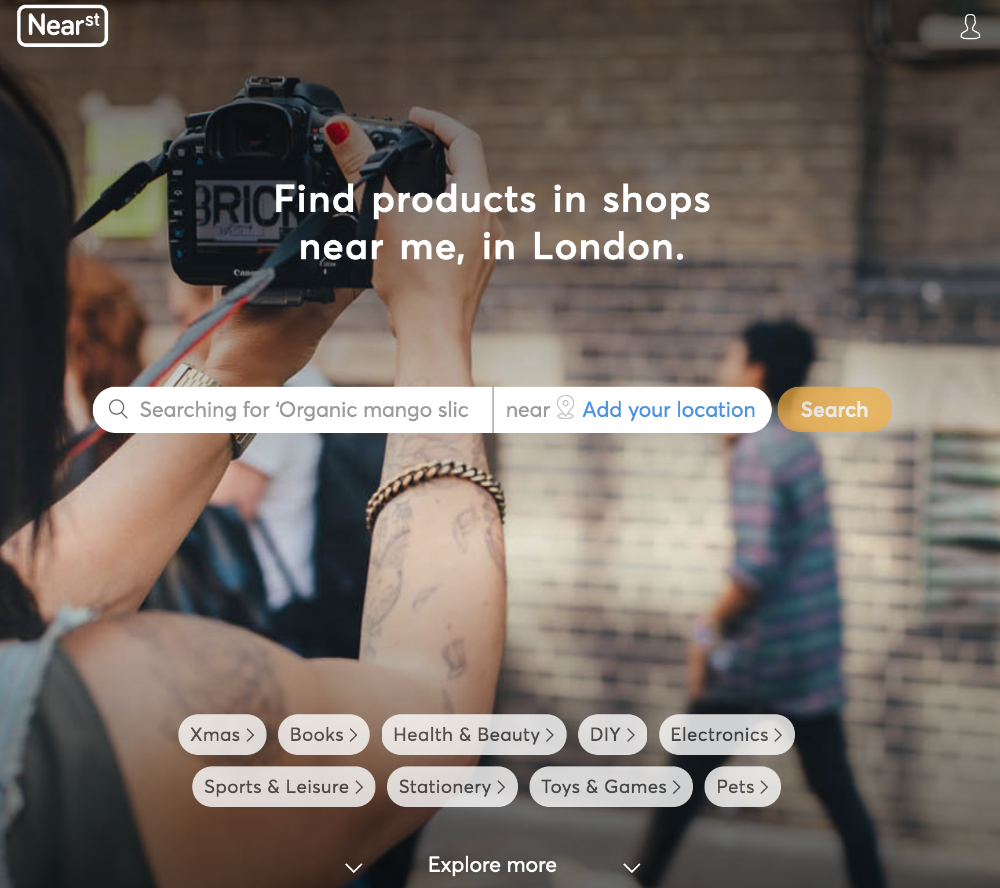

I'm a Sustainability | E-commerce enthusiast & passionate about Growth Marketing 🌱 ! I help companies understand their client's journey, optimising their experience and discovering the most efficient channels to get and retain them.
✪ We help shoppers find and buy products near them, by making the inventory in local shops go live on Near.st
✪ As a part of the Growth Tribe Academy, we teamed up with Instant for 12 weeks finding new ways of achieving explosive growth by applying growth hacking techniques. 🚀
✪ Founded an E-commerce platform encouraging urban farming among citizens. Created & executed digital marketing plan. Developed seed products increasing brand positioning.🌱